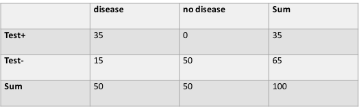
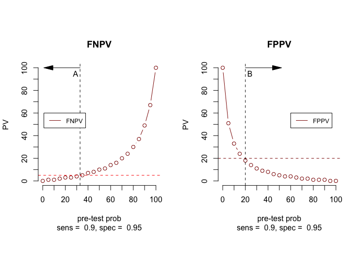

False negative tests for SARS-Co-2 Infection – Challenges and Implications.
Introduction
The paper "False negative tests for SARS-Co-2 Infection" (1), appeared in the New England Journal of Medicine in August 2020. Our comment is, that the paper omits data essential for a correct interpretation of the problems described.
If SARS-CoV-2 diagnostic tests were perfect, a positive test would mean that someone carries the virus and a negative test that they do not. The figure below (Fig. 1) shows a plot of a perfect diagnostic test.
Fig. 1. A plot of the perfect Covid-19 test.
Fig. 1. A plot of the perfect Covid-19 test.
On the horizontal axis- the pre-test probability and on the y-axis the predictive values. Abbreviations: FNPV = false positive predictive value, TNPV = true negative predictive value, FPPV = false positive predictive value, TPPV = true positive predictive value, sens = sensitivity, spec = specificity.Perfect test
Assume that an RT-PCR test was perfectly specific (always negative in people not infected with SARS-CoV-2) and that the pretest probability for someone who was feeling sick after close contact with someone with Covid-19 was 20%. If the test sensitivity were 95% (95% of infected people test positive), the post-test probability of infection with a negative test would be 1%, which might be low enough to consider someone uninfected and may provide them assurance in visiting high-risk relatives.
Fig. 2. Predictive values for all pretest probabilities.
Fig. 2. Predictive values for all pretest probabilities.
A vertical dashed grey line is drawn at pre-test probability of 50%. The horizontal dashed red line represents the FN threshold at 5%.What can the reader conclude from this plot?
At a pre-test probability of 20%, the FNPV is below the red dashed line or less than a 5% threshold. We can calculate the exact FNPV simply by filling in the table values.
Table I Calculation of FNPV at a pre-test probability of 20%.
Pre-test prob=0.20, sens = 0.95 and spec = 1. FNPV = 1/(1+80) = 0.012 or 1.2%
The answer of the question “Is this a good test in clinical practice”?
is yes. If the threshold for acceptable FN test results is set to 5%,
than we will not exceed this threshold in all conditions,
where the pre-test probability is less than 50%.
We can also calculate the FNPV by filling in the table values.
Table II. Calculation of FNPV at a pretest probability of 50%.
Pre-test prob=0.50, sens = 0.95 and spec = 1. FNPV = 2.5/(2.5 +50) = 0.047 or 4.7%
A less sensitive perfect test
Subsequently, the authors answer the question would happen with the FNPV values
when the sensitivity of the test would drop from 95% to 70%.
Again, we can produce a plot for this setting and calculate the FNPV at different
pretest probabilities.
Fig. 3. Predictive values at sensitivity of 70%.
Fig. 3. Predictive values at sensitivity of 70%.
The vertical dashed grey line is drawn at pre-test probability of 50%. The horizontal dashed red lines represent the FN threshold at 5% and at 23%Table 1II.Calculation of FNPV

Pre-test prob=0.50, sens = 0.70, spec = 1. FNPV = 15/(15 + 50) = 0.2307 or 23%
At this setting, there would be a FNPV of 23% at a pre-test probability of 50%, which is far too high to safely assume someone is uninfected in a hospital environment, where a threshold of 5% is clinically acceptable.
Covid-19 in Real Life
Next, the authors move to the real life situation and they consider 2 scenarios of Covid-19 tests:
a test with a specificity of 95% and a sensitivity of 90%
a test with a specificity of 95% and a sensitivity of 70%
Fig.4. Chance of SARS-CoV-2 Infection, Given a Negative Test Result, According to Pretest Probability.
Fig.4. Chance of SARS-CoV-2 Infection, Given a Negative Test Result, According to Pretest Probability.
The blue line represents a test with sensitivity of 70% and specificity of 95%. The green line represents a test with sensitivity of 90% and specificity of 95%. The dashed red line is the threshold for considering a person not to be infected (asserted to be 5%). Arrow A indicates that with the lower-sensitivity test, this threshold cannot be reached if the pretest probability exceeds about 15%. Arrow B indicates that for the higher-sensitivity test, the threshold can be reached up to a pretest probability of about 33%. An interactive version of this graph is available at NEJM.org.The authors mention in their paper, that diagnostic testing will help in safely opening the country, but only if the tests are highly sensitive and validated under realistic conditions against a clinically meaningful reference standard. In addition, they state the FDA should ensure that manufacturers provide details of tests’ clinical sensitivity and specificity at the time of market authorization (which they do); tests without such information will have less relevance to patient care. Now, we must guess what sensitivities and specificities of COVID-19 test are, since manufacturers do not provide them publicly. The green curve (sensitivity 0.90 and specificity 0.95 ) shows that at a pre-test probability of 33% we exceed the 5% threshold of FN test results. The blue curve (sensitivity 0.70 and specificity 0.95) shows that at a pre-test probability of 15% we exceed the 5% threshold of FN test results. The post-test probability is not below 5% at pretest probabilities 15 - 33 %, and certainly not at 50%, which is a more reasonable estimate for someone with recent exposure and early symptoms in a “hot spot” area.
Based on this figure, one may say is that in the hospital setting, where we expect a pretest probability between 20 - 50 %, we can easily send patients home with a negative test result, that might be a FN test result because we exceed the 5% threshold for acceptance.
However, that is not the only thing that will be a problem with this test. To give the reader the complete picture of reality based on the data provided, we also need to show the FP test results
Fig.5.Complete picture of reality if sensitivity of the Covid-19 test is 90%.
The red dashed line represents the 5% threshold based on clinical judgement.Figuere 5 not only show the problem that arise with the false negative test at pretest probabilities of less than 50%, but also the problem of the increasing numbers of false positive tests at the same time.
Fig.6.Complete picture of reality if sensitivity of the Covid-19 test is 70%.
Fig.6.Complete picture of reality if sensitivity of the Covid-19 test is 70%.
Fig. 6 also show also the problem of increasing numbers of false positive tests at pretest probabilities of less than 50%The authors either overlooked this worrisome aspect of the tests or did not want to discuss
its consequences in their paper.
Anyway, when governments of the USA or other countries consider to use these
test in the general population outside the hospital environment, they must be prepared
to face increasing numbers of false positive test results, because in the
general population the pretest probability of disease is less than 10% (2).
Summary
The authors discuss the problems with FN results for a diagnostic Covid-19 test. They emphasize the necessity of a highly sensitive test validated under realistic conditions against a clinically meaningful reference standard. The FDA should ensure that manufactures provide details of sensitivity and specificity of their test at the time of market authorization (which they do). They also express their concerns of using these tests in in symptomatic people where pretest probability is high, because these tests cannot rule out infection. Besides, measuring test sensitivity in asymptomatic people is an urgent priority. Finally, they recommend developing acceptance thresholds of FN results for a variety of clinical situations, realizing that these thresholds are value judgements based on clinical input.
Comment Summary
Our main problem with this summary is, that it is incomplete. Although, we agree with the points mentioned. However, emphasizing the problem of FN tests is one side of the coin. The other side is the problem with FP results in out-of-hospital settings.
Acceptance thresholds for FN tests
The authors use a 5% threshold of FN test results as an acceptable measure as a kind of axiom of throughout the paper (as a rule of the thumb). This means - since FN test results and TN test results are complementary – that the threshold for TN results is 95% or more, but they omit to set a acceptable threshold for FP test results as the counterpart.
Acceptance thresholds for FP tests
These thresholds (not mentioned in the paper) are crucial. Let us assume that a threshold of 20% is acceptable and work out the first and second scenario presented in the paper.
First scenario
Sensitivity is 90% specificity is 95% for a Covid-19 test where the threshold for FN results is set to 5% and the threshold for FP results is set to 20%. Fig. 7. shows the FNPV and FPPVs for the setting mentioned in the paper.
Fig. 7. FNPV and FPPV for the first scenario

Fig. 7. FNPV and FPPV for the first scenario
Arrow A points to the pretest probabilities where the FNPV is less than 5 %: as mentioned before these are the pretest probabilities around 33% or less. Arrow B point to the pretest probability where the FPPV is less than 20% at pretest probabilities greater than 20%.If, we assume in a hospital environment where the pretest probability of infection is in between 20% and 33%, then we will reach our goal to obtain a FN percentage of maximal 5% of all negative tests and a FP percentage of 20% or less of all positive test results.
Is this a good test for the hospital environment? The answer is yes. The conditions that FN test of all negative tests will not exceed the preset 5% threshold and the FP threshold is limited to 20% of all positive test results.
Second scenario
Sensitivity is 70% specificity is 95% for a Covid-19 test where the threshold for FN and FP results remain the same.
Fig. 8. FNPV and FPPV for the second scenario
Fig. 8. FNPV and FPPV for the second scenario
Arrow A points to the pretest probabilities where the FNPV is less than 5 %: as mentioned before these are the pretest probabilities around 15% or less . Arrow B point to the pretest probability where the FPPV is less than 20% or a pretest probabilities greater than 20% .Again, in the hospital setting, we will never reach our goal, because there is no overlap between the areas (less than 15% and greater than 20%) where both conditions are fulfilled.
A way to handle this situation in the hospital environment where the pretest probability of infection is in between 15% and 33% (suggested by the authors), is to accept a higher percentage of FN tests by changing the FN threshold to 15%. Figure 9 illustrates the scond scenario with an adapted FN threshold.
Fig. 9. FNPV and FPPV for the second scenario with adapted FN threshold
Fig. 9. FNPV and FPPV for the second scenario with adapted FN threshold
Arrow A points to the pretest probabilities where the FNPV is less than 15 %:
Arrow B point to the pretest probability where the FPPV is less than 20%.
In a hospital environment where the pretest probability of
infection is in between 15% and 33%, we will reach our goal, because there is
overlap between the areas where both conditions are fulfilled.
In general, if we have a diagnostic test with a high specificity (95% or more)
we must accept an increasing number of FN tests when sensitivity drops from 90%
to 70% or more for any pretest probability.
This does not mean the test is not
a valuable test. It is an excellent test to discover disease, however a
negative test does not exclude the disease studied. As a real-life example,
ST segment elevation on the ECG (specificity > 99%) is an excellent test to establish a
diagnosis of acute myocardial infarction (MI), but an ECG without
ST segment elevation does not exclude an acute MI. This is easy to remember,
if one realizes that a test with a specificity of 100% has no FP test results (Fig. 1)
and a positive test always is a true positive test.
Diagnostic tests used beyond the domain defined for clinical application
A problem with diagnostic tests arises when they are used beyond the domain, where they were defined for their application. For instance, mammography as a diagnostic test for breast cancer was studied in the hospital environment extensively in the past. Investigators decided to perform the same tests in asymptomatic women above a certain age in the general population and found an enormous number of FP test results (3). This is not surprising, if we look at our plots (Fig. 7-8). If the prevalence or pretest probability in a general population is less than 1-2% (3), FP test results will not come as a surprise. The same is true for HIV testing in asymptomatic young adults (4). At present, a HIV diagnosis is never made based on a single test result. All reactive (potentially positive) results are checked with extra confirmatory tests, using a sequence of two or three different tests. If a positive result has been confirmed in this way, you can be confident that it is accurate.
Covid-19 diagnostic tests beyond the domain defined for clinical application.
If we use the test described in scenario 1 and 2 outside the hospital, we should not be surprised to find increasing numbers of FP test results, when pretest probability of Covid-19 in the general population is estimated to be less than 10% (2). This will create an enormous burden on the health care systems all over the world and if there are no additional reliable tests for asymptomatic and symptomatic people, only chaos is created.
Conclusions
The paper discussed contains incomplete information on the problem of diagnosing Covid-19 infection. Emphasizing the problems of FN tests is one side of the coin, which is important in a hospital environment. the higher the sensitivity of the test, the lower the number of FN test results. The other side of the coin, is the problem of FP results. The tests described by the authors may be valuable in hospital environments to establish a correct diagnosis of Covid-19 infection. The higher its specificity the lower the number of FP test results.However, when one applies these tests in the general population, the percentage of FN test results is not the thing to worry about, since the numbers of FN test will only drop. Howver, the increasing number of FP test results may become unacceptably high.
References
1.Steven Woloshin, M.D., Neeraj Patel, B.A., and Aaron S. Kesselheim, M.D., J.D.,
M.P.H. False Negative Tests for SARS-CoV-2 Infection – Challenges and Implications.
NEJM 2020:383;6;e38(1) 2020.
2. John Hopkins University of Medicine. Coronavirus Resource Center.
October 14, 2020. website: coronavirus.jhu.edu.
3. Firas M. Dabbous, Therese A. Dolecek , Michael L. Berbaum, Sarah M. Friedewald ,
Wm. Thomas Summerfelt , Kent Hoskins , and Garth H. Rauscher. Impact of a False-Positive
Screening Mammogram on Subsequent Screening Behavior and Stage at Breast Cancer Diagnosis.
Cancer Epidemiol Biomarkers Prev 2017;26:397-403.
4. Joanna Reida, Gert Van Zyla, Michael Linströma, Stephen Korsmanb, Gert Maraisb,
Wolfgang Preisera. High positive HIV serology results can still be false positive.
IDCases 2020, https://www.sciencedirect.com/science/article/pii/S2214250920301578
Acknowledgement
I would like to express my special thanks to Daniel Lakens for his outstanding lectures on sensitivity and specificity.
All plots in this article were made with the R software program (R-statistical software : version 3.5.3 (2019-03-11) -- "Great Truth" Copyright (C) 2019.The R Foundation for Statistical Computing Platform: x86_64-apple-darwin15.6.0 (64-bit)) The complete R code can be downloaded from the Github Repository. On the Github repository page, select the Green Code button. Select download ZIP from the pull down menu and you will find the "NEJM-Covid-main.zip" in the download folder of your computer.